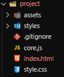

Le projet
Tu t'es donnée du mal pour arriver à cette partie, maintenant, amusons nous sur un vrai projet !
Je te propose de continué le célèbre jeu, Point'n'mon.
Tu trouveras ci-dessous la liste des éléments à implémenter dans le jeu. Tu peux les faires dans le désordre et n'oubliez pas de valider ton avancer avec les check box en haut à droite !
Vérifier le bon fonctionnement du projet
Pour cela, je te laisse ouvrir le projet présent dans le dossier Point'n'mon dans ton éditeur de texte favori, VSCode.
Une fois cela effectué, tu vas pouvoir ouvrir le fichier index.html dans le navigateur et écrire tes premières lignes de code dans ce dernier !
Comprendre le système du projet
Pour implémenter de nouvelles fonctionnalités, il est important que tu comprenne ce que l'on va faire. Voici donc une courte description des fonctionnalités de Point'n'Mon.
- Démarrer la console
- Choisir un pokémon de départ
- Dialoguer avec des personnages
- Lancer des combats de pokémons
- Changer de cartes à l'aide de téléporteur
- Arréter la console
Chaque fonctionnalité est à implémenter dans le fichier index.html en dessous du commentaire indiquant son emplacement. Pour faciliter l'écriture du code, des commentaires son présent pour t'indiquer ou écrire ce dernier.
C'est donc le moment de commencer cette folle aventure ! Bon code !
Démarrer la console
Actuellement, notre console ne démarre pas. Pour la faire démarer, il va falloir écrire du code javascript dans le fichier index.js.
Pour afficher l'écran de choix du pokémon, tu vas devoir créer une fonction javascript loadPokemonChoice.
Cette dernière devra supprimer la classe de style hidden de la balise avec l'id pkm-choice.
C'est maintenant à toi de jouer !
Placer Sacha devant chez lui et le faire parler
Ici l'objectif est d'ajouter un bouton représentant Sacha dans le fichier index.html. Cela nous permettra d'intéragir avec ce dernier.
Rends toi dans la section de code ayant une div avec l'id 0 et la classe map.
Une fois cela fait, il va falloir placer le bouton avec les classes item et player ainsi que d'appliqer du style inline pour placer le bouton.
A présent, tu peux le faire parler en appelant la fonction openDialog dans l'attribut onclick de la balise button représentant Sacha. Le paramètre de la fonction est la chaine de caractère à lui faire dire.
Placer un adversaire pour combattre !
Comme pour Sacha, ajoutons un bouton représantant notre adversaire. Ce dernier devra comporter les classes item et npc ainsi que le style inline pour placer ce personnage (les attributs position: absolute; top; left;).
Une fois cela fait, il te suffit d'appeler la fonction loadBattle pour pouvoir se battre contre lui !
Réparer l'interface de combat
Comme tu as pu le voir si tu as lancé un combat en cliquant sur ton adversaire, il y a un petit problème sur le placement des noms des pokémons.
On va devoir réparer tout ca avec un peu de style. En regardant dans l'html, tu pourras chercher les selecteurs dans une balise div ayant pour id battle. Tu devras trouver :
- La classe pkm-name
- L'id my-pkm-name
- L'id opponent-pkm-name
Une fois ces identifiants trouvés, tu pourras les placer dans le bloc style avec les attributs position: absolute; top; left;
Changer de carte
Maintenant que tu sais quasiment tout faire, tu vas pouvoir te déplacer de carte en carte !
Pour cela, tu peux cliquer sur les téléporteur (croix noir).
Ce que tu vas faire ici, c'est ajouté une connection de la carte 1 vers la carte 10, puis de la 10 vers la carte 0. Pour ce faire :
- Dans la div ayant pour id 1, ajoute un bouton avec les classes item et gate ensuite, il te suffit de placer les éléments avec du style inline comme à l'acoutumé. Pour finir, ajoute l'attribut onclick avec la fonction loadMap(0)
- Dans la div ayant pour id 10, ajoute un bouton avec les classes item et gate ensuite, il te suffit de placer les éléments avec du style inline comme à l'acoutumé. Pour finir, ajoute l'attribut onclick avec la fonction loadMap(10)
Il est temps d'éteindre la console
Peut tu finir en cachant l'ensemble du contenu de l'écran quand l'on clique sur le bonton 'Stop' ? Pour cela, il va falloir que la fonction appeller à l'appuie du bouton appel une fonction déjà implémenté, unloadMap.
S'il te reste du temps.
Tu peux t'amuser à implémenter une nouvelle carte avec d'autres personnages pour encore plus de fun !